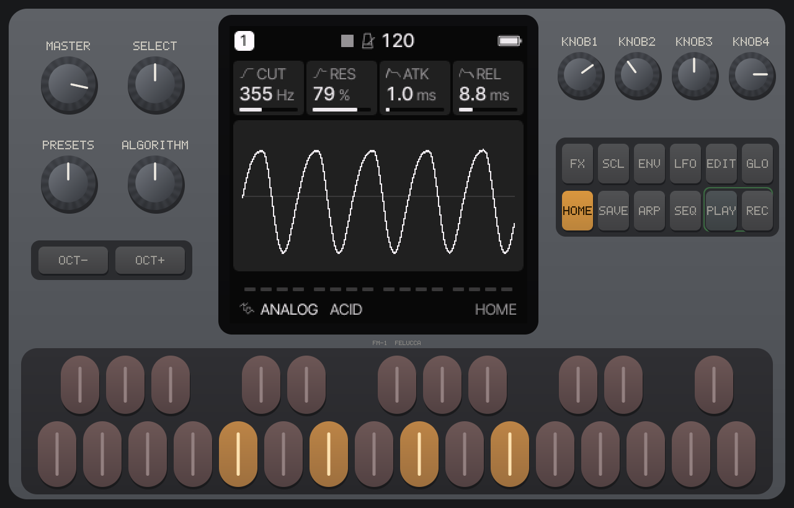
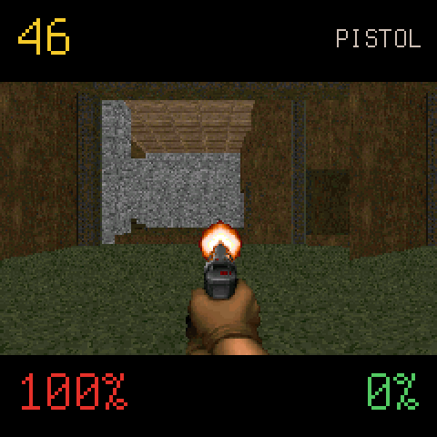
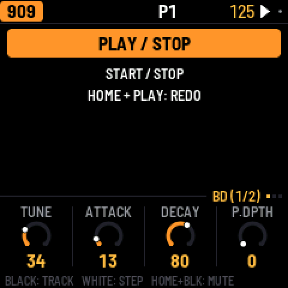
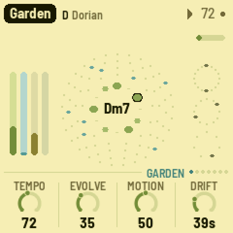
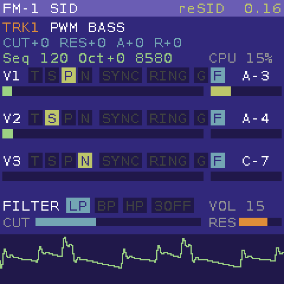
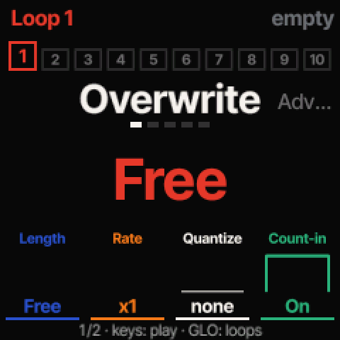
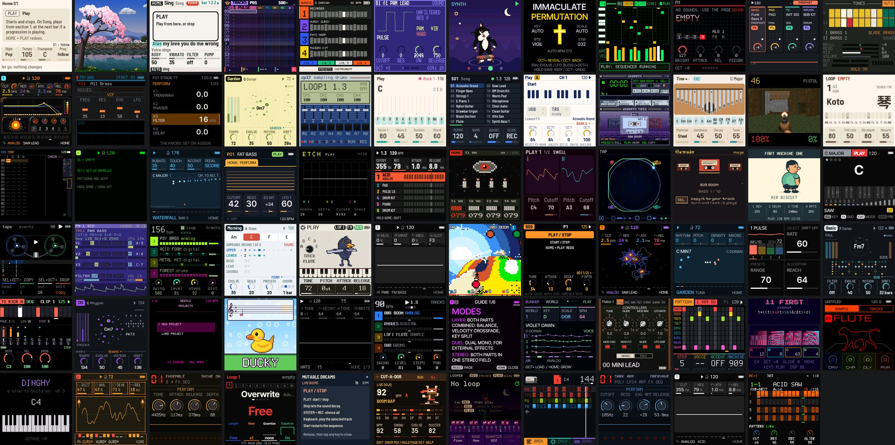

An undocumented CPU, a coding agent, and the vendor's own tools as the oracle
M-VAVE FM-1 · JieLi pi32v2 · 95 community firmwares · in the browser
Joakim Eriksson, RISE — October 2026

A pocket synth that people write firmware for
M-VAVE FM-1: a six-operator FM synth with a 240×240 colour screen, 27 keys, 7 encoders, MIDI in and stereo out.
Its updates are USB-MIDI messages with only a CRC check, so the community wrote its own firmwares within weeks: drum machines, grooveboxes, ambient generators, a chord harp… and Doom.
The goal: run them unmodified. Try one before you flash it, write one without the synth on the desk, play them in a browser.
The CPU is undocumented. JieLi's pi32v2: 2-, 4- and 6-byte instructions, dual-issue pairs, hardware loops. No manual.
The vendor's toolchain is public. A Clang 4.0.1 fork and an objdump that disassembles it. Linux x86-64 only: Docker on a Mac.
There was no hardware. The FM-1 was ordered on 8 October and had not arrived.





Six of them, on the emulated screen: Doom, a 909 drum machine, an ambient garden, a C64 SID synth, Rainbow Mode, a looper.
No board yet? Then the vendor's tools are the oracle
agentcodeemulatorvendor tools = oracleboard
1Recovering the instruction set: a mining job
Day one's plan: "a mining exercise, not black-box discovery."
0instructions disassembled by the vendor's objdump
0firmware listings mined
0instruction classes in one table
0mismatches against the vendor
Operands as exact linear models. Each printed operand is fitted over the bits that vary. A fit is kept only if it reproduces every sample of its class.
One rule for a packed 12-bit constant reproduces a 70-entry table of observed constants, IEEE floats among them, and about 1 650 samples.
Felucca 1.6 came out on the day the report was written and halted on d7 ec 51 38. Comparing every load and store across the 25 listings gave one model: 27 884 samples, 0 mismatches. It played the same day.
agentcodeemulatorvendor tools = oracleboard
2The compiler's constant folding says what is right
A probe computes each expression twice: once at run time on the emulated CPU, once folded by the vendor's LLVM at compile time
// probes/arith.c, built with the vendor's Clangvolatile int32_t a = 1234567, b = -89, c = 7;
volatile uint32_t ua = 0xDEADBEEF, uc = 13;
T(a / c, 1234567 / 7);
T(b % c, -89 % 7);
T(ua % uc, 0xDEADBEEFu % 13u);
T(a * 241, 1234567 * 241);
The left side compiles to pi32v2 instructions, the right to a number. A mismatch is an emulator bug.
0integer arithmetic checks
0floating-point cases, against LLVM's own folding
0checks of Felucca's font decoder, on data from its own packer
And the bits no firmware uses: sweep one operand at a time, assemble thousands of lines per Docker run, read the bytes back. That is how the floating-point unit was found.
Every bug was invisible where it happened
A selection from the work log: the symptom showed up much later, in a picture or a sound
Defect
Symptom
Found by
a 2-byte shift took bit 7 as a register bit
copy loops ran 4× too long; RAM corrupted
a boot trace
a 16-bit read at word offset 2
every 16-bit canvas sheared
a probe
unsigned compares sign-extended
wrong branches on if (r2 < 2111)
a probe
no arithmetic flags
64-bit adds lost their carry; the SID filter sounded wrong
soft-double probes
the random-number unit read as 0
the stock UI froze after 8 seconds
debugging the freeze
a hand-written decoder: bit 7 in the register
stored r9 instead of r1
the solver replacing hand code
Three of the hand-written decoders were silently wrong. They surfaced only when generated ones replaced them.
agentcodeemulator = proxycatalog = oracleboard
3Byte-identical, or it didn't happen
Three ways to run the same code: one instruction at a time, a block interpreter, and JITs to ARM64, x86-64 and WebAssembly
The rule: an optimisation is accepted only if every firmware's audio stays byte-identical in every mode, and to the build before. "Did the JIT break something subtle?" becomes a file comparison.
Today, in CI: on every emulator pull request and before every release, all 95 catalog firmwares play 8 s of scripted keys, MIDI and PLAY, compiled and interpreted, against stored audio hashes. About 5 minutes, 4 machines.
5–9×real time at the chip's 240 MHz, natively (an M5 Max)
~25 µsto compile a hot region to WebAssembly, inside the browser's audio thread
The catalog check, on the fix for Rainbow Mode's hang
identicalsound changed: listed, listened to, re-hashed
A contributor's fix (the global interrupt-enable bit) made Rainbow Mode play instead of hang. The check listed exactly which six firmwares changed sound. Each change was right: Rainbow plays, a note now lands on time.
Pin every output first. Then going faster is safe, and a change that moves a sound has to say so.

71firmwares, one frame each, rendered by the emulator for this slide. None of them modified.(Of 95 in the catalog; look-alike builds left out.)
Live: the emulator compiled to WebAssembly, booting Felucca's real update package in this browser tab. Click Start · D reboots · ↓ two more.
Extra: FM-1 SID — a Commodore 64 tune's own 6502 code and a SID chip model, running on the emulated FM-1's CPU.
Extra: FM-1 Doom. A community port, unmodified, on the emulated chip.
agentcodeemulator = proxyboard
4A new firmware, written on the emulator
FM-1 SID: could the FM-1 be a Commodore 64 sound chip? Machines inside machines, each one checked
SID engine, per sample
instructions
of the core
own integer model
316
5.8 %
reSID 0.16, fast: chosen
440
8.1 %
reSID 0.16, interpolate
5 562
102 %
reSID 0.16, resample
39 226
721 %
Measured by counting emulated instructions; output bit-identical to the same code built for the host.
Output correlates 0.984 with host reSID on the same register stream. With the effects at zero: 0 of 176 512 samples differ from the build before.
Writing it found four more emulator bugs, the missing carry among them.
Then it was offered as an install for the real FM-1, before anyone had run it on one.
Five days to a browser, three weeks to a release
8 OctRecon. The vendor toolchain in Docker reproduces a known disassembly byte for byte.
9 Oct1 067 classes mined. The stock firmware boots to its RTOS on two cores.
10 OctTimers, screen, audio, keys. Felucca plays. Fifteen firmwares in the browser.
11–12 OctBoth cores, the Wasm JIT, MIDI in. FM-1 SID offered as an install.
15 OctThe instrument plugin: AU, VST3, CLAP.
19 Octv0.2.0. FM-1 SID's users cannot reach their units.
23 OctThe FM-1 is here. FM-1 SID fails on it.
24–25 Octfm1-dock and probes; FM-1 SID verified on the device.
26 Octv0.3.0: M-VAVE's V16, x86-64 JIT.
0commits
0pull requests merged
0firmwares in the catalog, every one hashed
0stars
0forks
agentcodeemulatorusers' FM-1sboard
Released before it was tested
FM-1 SID went on the community's firmware hub, beside firmwares that had run on real units. Nobody on the project owned an FM-1.
11 Oct. Offered as an FM-1 update package. Tested on the emulator only.
19 Oct, issues #22 and #24. It plays, but the computer no longer sees the FM-1. FM-1 SID had no USB stack, and an FM-1 is updated only through the firmware that is running.
The way back was found by the community, not by us: OCT− and OCT+ held for five seconds at power-on enter the chip's own update mode, and a third-party flasher writes the stock firmware back. FM-1 SID came off the hub.
23 Oct, my own unit. USB added, three ways back built in, every check on the emulator passed. On the device: no tune played, and no reply ever reached the computer.
4recoveries of my own unit through the chip's mask-ROM mode, from Linux: no macOS tool exists
Each owner who installed it had to find and perform that recovery themselves.
The emulator could not have caught it: it had no USB model, and nothing in it asked whether a firmware can be replaced. A failure of process, not of emulation.
agentcodeemulatorboard = oraclehuman: the idea
fm1-dock: install once, then deploy and measure
My question, three days before the board arrived: can the risk be removed at its source?
# the same probe on both machines,# timings side by side with their ratio$ tools/probe.py run probes/cycles.c \
--on emu,fm1
The emulator speaks the same protocol over an emulated USB device: every tool runs against either machine.
The first probe crashed on its second instruction on the device. In the emulator it ran happily.
The cause: a PC limit. The start-up code every Felucca-family firmware inherits arms the core's guards. Modelled, the emulator now crashes at the device's own addresses, 0x01C301A2 and 0x01C301BA.
agentcodeemulator ⇄ boardhuman: cable
Tuning the emulator towards the chip
A question about the chip now cost a small C file and seconds on the device. Two days, eleven questions.
cycles per instruction
FM-1
strict mode
nop, and, add
0.58–0.75
0.62
load word
1.25–1.34
1.25
multiply
1.92
1.88
divide
6.75
6.78
branch, taken
6.50
6.50
call + return
10.2
10.0
load feeding a load
3.08
1.25
Measured from RAM. Before, the emulator charged one cycle per instruction. Flash cache: 32 KB, 64-byte lines, ~300 cycles a miss.
FM-1 SID's own load meter
0% on the device
0% emulated, one cycle each
0% in strict mode
The screen: the emulator drew a frame at once; the chip's SPI takes ~82 ms. FM-1 SID redrew every 40 ms and starved its tune. Timed transfers reproduced the silence.
Emulated at 130 MHz, it failed the way the device did and showed why: once play fell behind, an unsigned subtraction wrapped and generation stopped for good.
Semantics: one error in all of it. A hardware loop of 32 or more runs its count modulo 32.
Right about everything its oracles reached. Wrong about what none of them covered: timing, caches, and the guards a start-up file switches on.
FM-1 SID, from its first release to one that runs on the device, in four rounds
Date
Change
On the FM-1
Recoveries
11–19 Oct
FM-1 SID, tested on the emulator only; no USB
plays; no computer sees it
the owners'
23 Oct
USB-MIDI, three ways back
tunes silent; installers get no reply
3, from Linux
24 Oct
probes; the screen in strips; FM-1 SID as an fm1-dock module
plays, and USB answers
–
25 Oct
the standalone firmware in fm1-dock's boot slot, to study its USB
the escape keys missed: it took over at every start
1, from Linux
25 Oct
no boot slot in releases; keys read for 500 ms; FM-1 SID 0.2
heaviest block 34 %, no overruns
–
The boot-slot trap: the escape keys were read in the first 50 ms after power-on. The emulator honoured that; the device did not. A way back is not proven until it has been taken on the device.
A rule fitted to past failures is not evidence. An emulator rule requiring 8-byte-aligned USB buffers reproduced all six failed builds. A probe on the chip refuted it.
Issues and pull requests from people with an FM-1 on their desk
M-VAVE's new firmware froze
V16 loaded with a blank screen and no response, reported by a user in Logic. Three causes: its patch storage, new floating-point instructions, the screen driver's interrupt.
Plays in v0.3.0.
A firmware hung after PLAY
Rainbow Mode stuck on a 172 Hz buzz. A contributor found it: an interrupt-enable bit the emulator did not set.
The catalog check named the six firmwares the fix changed.
The rule for my own unit
Installs are run by the human, after an explicit yes, with the way back stated first.
The agent may read from the device and run probes, which never write flash.
The first hardware in the loop was other people's.
The rules that made the agent's output trustworthy
1One source of truth
The decoder is generated from one table, never edited by hand. Deleting the hand-written decoders is how three silent bugs surfaced.
2The vendor is the oracle, not a guess
Encodings from its disassembler, unseen bits from its assembler, semantics from its compiler's constant folding.
3Byte-identical, or it didn't happen
Every optimisation, every firmware, every execution mode, against the build before.
4Log the unknown, state the unverified
Unknown accesses are logged; unknown instructions halt with their class name. What is unchecked is marked so, in the docs and on the page.
5The device decides, the way back first
An emulator pass makes a candidate, not a release. Nothing risky goes on a unit before its way back has been taken on the chip.
6Pin the catalog, then go faster
95 firmwares' audio hashed in CI. A change that moves a sound says so in its own pull request.
Not review of every line: a small set of rules that turn claims into checks. Rule 5 was learned the hard way.
Who did what
The human
Chose what to build, and in what order: the emulator, the SID synth, the plugin, a repository of its own.
Judged by playing and listening.
Set the tone of the public pages: "a better story", less technical.
Asked for the host that took the risk away: fm1-dock.
Approved everything outward-facing: pushes, merges, releases, messages. Ran every install on the real FM-1, and every recovery.
The agent
Read the community's sources; ran the vendor toolchain in Docker.
Wrote the mining and fitting tools, the emulator, three JITs, a firmware, fm1-dock, and the probes that measured the chip.
Measured everything; reviewed contributors' pull requests against the catalog.
Kept PLAN.md, a 1 147-line work log of each phase's state, numbers and open questions, so work resumes after any interruption.
Naming the cause still took a second look. CI suddenly could not download 20 firmwares. The agent's first theory was rate limiting. The cause: the Firmware Hub deletes old builds, and a CDN cache near my desk still served them, so everything passed locally. Green by accident, again — this time from a cache.
What I take from it
1An undocumented CPU is recoverable in days
…when the vendor's own tools are the oracle. Disassembler, assembler and compiler each answer a question no guess can.
2Pinned outputs make speed safe
Two JITs, then three, written without fear, because every firmware's sound is a hash. The same hashes now review contributors' fixes.
3The emulator came before the board, but the board decides
Right wherever the vendor's tools could see. Timing, caches and guards took the chip, and a day of probes.
Build the oracle before the board arrives. Then put the board in the loop anyway.
Thanks for listening
Joakim Eriksson, RISE
Try it: joakimeriksson.github.io/fm1-emu Code and tech report: github.com/joakimeriksson/fm1-emu Firmwares: thefirmwarehub.com
Built on the community's work: AL-255's FM-1-RE, ip2k's lunar-modulator, kagaimiq's jielie, hugelton's Felucca, zvenson's Dinghy, the community members who found the way back, the contributors, and every firmware author who published.